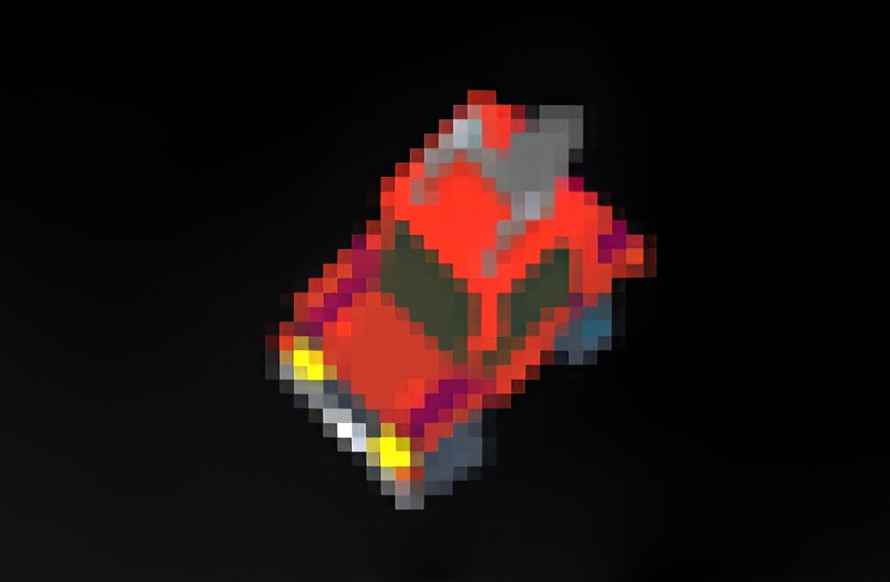

Pixel racers
A top down arcade-style racing game that I made in a team of five in Python for a competition.
The player can test their skills on a total of three intricate maps and compete with four unique enemies using different vehicles.
Click to find out more.
The player can test their skills on a total of three intricate maps and compete with four unique enemies using different vehicles.
Click to find out more.